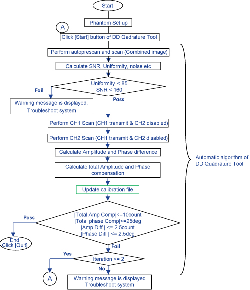
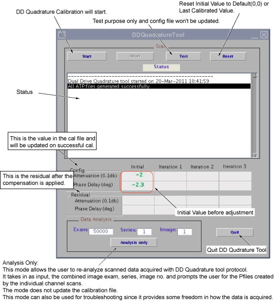
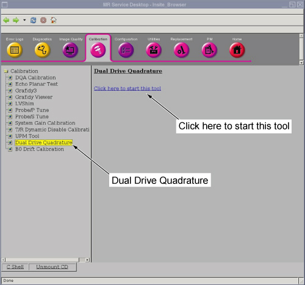
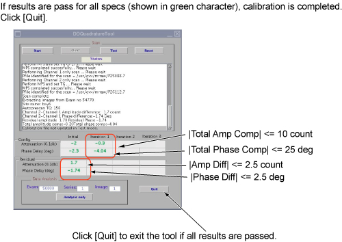
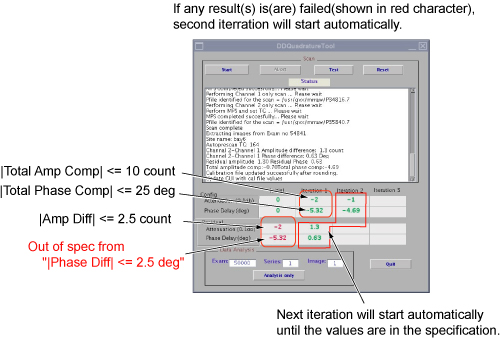

Proprietary to General Electric Company
Direction 5670006, Rev# 1
Discovery MR750w GEM Service Methods
Module Version 5.0, Version Date 10/18/11
Proprietary to General Electric Company |
| Required Persons | Preliminary Reqs | Procedure | Finalization |
|---|---|---|---|
| 1 | Not Applicable | 30 mins | Not Applicable |
A dual drive system has two transmit channels. The DD (Dual Drive) Quadrature Tool is used to compensate for the amplitude and phase differences in the transmit channels. Amplitude and phase differences between the two channels can begin at the Exciter and be carried right up to the end of the imaging chain which is the body coil transmit. It can also be introduced at any of the intermediate passive components.
Dual Drive Quadrature Tool performs Axial scans in three modes.
Combined mode
CH1 transmit & CH2 disabled
CH2 transmit & CH1 disabled
Dual Drive Quadrature Tool calculates amplitude difference between CH1 and CH2 channel, and also calculates phase difference between CH1 and CH2 channel. Then, updates the system calibration file with the cumulative compensation required.
Test mode without Calibration is provided.
Illustration 1: Flowchart of DD Quadrature Tool

Refer to Illustration 2 for the detail of DD Quadrature Tool User Interface.
Illustration 2: User Interface of DD Quadrature Tool

| Item | Qty | Effectivity | Part# | Manufacturer | |
|---|---|---|---|---|---|
| Body Loader w/ Sphere Phantom | 1 | - | 2371511 | - | |
| Service Filler Panels | 2 | curved tables only | 5344577 | - | |
| GEMS Coil Phantom Foam Support | 1 | flat GEM tables only | 5404900 | - | |
At the scanner, remove any surface or head coil from the bore. Confirm that cradle is at the Home Position.
Place a Body Loader w/ Sphere Phantom as shown in Illustration 3 as rough alignment.
For GEM (Flat) Table
Place GEMS Coil Foam Support so that the Body Loader will be located at the center of the cradle.
Place Body Loader w/ Sphere Phantom.
For Curved Table
Place Service Filler Panels under each of the two cradle panels.
Place the Body Loader at the center of the Table where two filler panels meet.
Illustration 3: Phantom Setup

Confirm that cradle is at the Home position. If not, move cradle to Home position.
Move the Cradle IN so that In Room Monitor shows 1080mm. See Illustration 4.
Adjust the Body Loader location so that alignment lights hit on the cross section on the Body Loader. (Fine Alignment)
Illustration 4: Alignment

Press [Land Mark] button. Then, press [Advance to Scan] button.
Open MR Service Desktop. Select “Calibration” Tab, “Dual Drive Quadrature”, and “Click here to start this tool”.
| NOTE: | Tool can select in either proprietary mode or non proprietary mode. Illustration 5 shows non proprietary mode. For proprietary mode, select tool from Calibration Wizard. |
Illustration 5: Invoke Dual Drive Quadrature Tool (Non proprietary mode)

| ||||
| Once [Start] button is clicked, config file will be updated
per calculation. If you want to test only without updating config file, click [Test] button. | ||||
To start the DD Quadrature Tool, click [Start] button for first iteration. Scan and analysis will start. It will take about 6 minutes.
Illustration 6: Start Calibration

| NOTE: | If the phantom is off-centered by more than 30mm, the
following message will show up. Setup phantom again if this message
is shown.
|
Once first iteration is completed, calibration result will be pass or fail described in following step a and step b.
If calibration is passed as Illustration 7, click [Quit] to complete the calibration. Go to Finalization. ( Finalization, Step 1).
If the calibration is failed at first iteration as Illustration 8, the next iteration will start automatically until the values will be in the specification until iteration 3.
Illustration 7: Pass Case

Illustration 8: Fail Case at first itteration

If the calibration passes within the iteration 3, click [Quit] to exit the tool. If any result(s) is (are) failed in iteration 3, perform Quad Calibration Troubleshooting.
Restore Phantom and Cradle.
Perform a SPT Body SNR by selecting Body SNR to “ON” only and “NO” for the rest of the test from SPT Full test menu.